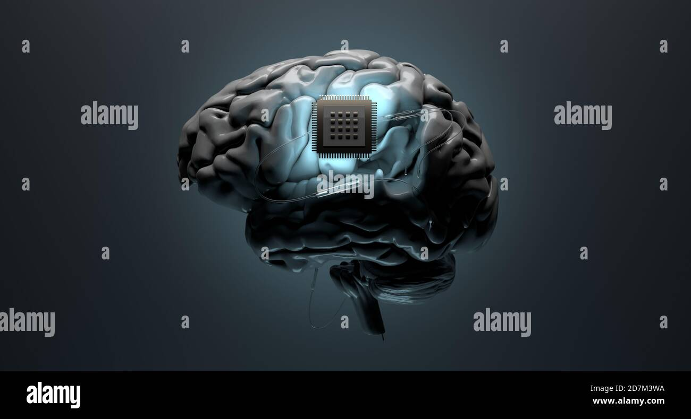

We are living in a world that is evolving and changing every and each day. New technology is emerging, for developing people's lives on new car technology to new medical solution problems for helping the blind and for better medical advancement.
We need to change on how we live to enable people to live in a better way
On this page I will be talking about Robots, new car technology for the future and neuralink technology
- NEURALINK 
- ROBOTS
- SOPHIA;
- AMECA;
FUTURE CARS
~This is an ultra high bandwidth brain-machine interfaces to connect humans and computers This is technology developed by Elon Muskwho is a Techprenuer changing the life of the Tech world.
~These neuralink devices uses cases ranging from treating Parkson's disease and restoring bodily function in paralyzed patients,to control computers with thoughts and communicating telepathically with other users. This tech giant was founded in 2016 and is still under development
~~The human world is changing and the world is being developed by technology for various things.
~~A robot is a machine- especially one programmable by a computer
##The following are robots that have been built with the improvement of AI(Artificial Intelligence);
This is a social humanoid robot developed by the Hong Kong-based company Hnason Robotics.It was developed in February 14,2016,and made her first public appearance in Mid March 2016 and hence has gained alot of attention in the world as it can speak.
For more info about Sophia visit: Hanson Robotics

This is the world's most advanced human shaped robot representing the fore-front of human -robotics neurotechnology-artificial-intelligence-technology designed as a platform of AI development.

For more information visitEngineered-arts
~~~The world is changing and new tech is emerging hese below I will show you a glipse of how future cars may look like

Enter your website address and comment below;